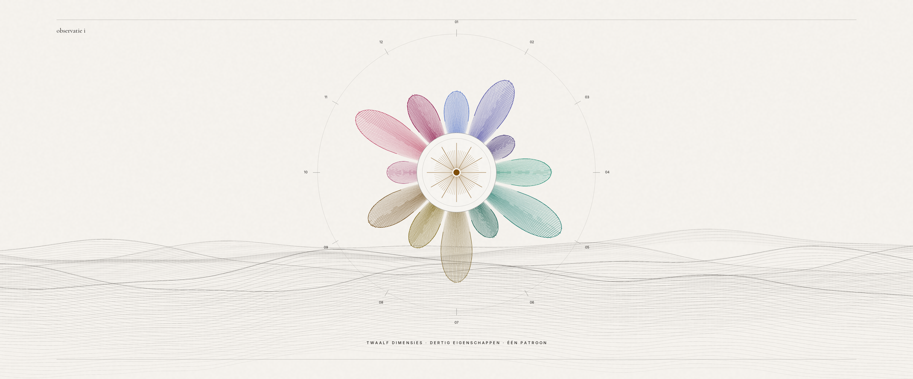

a
Perkament & Diepte
Behoud de ziel, verfijnd
Hero

ZELFINZICHT ZONDER HOKJES
Arcana
Profile
Beantwoord 120 vragen en lees terug wat je patronen zijn: waar je kracht zit, waar je jezelf in de weg staat.
Start de test
Het idee
Hetzelfde perkament, maar met bodem.
Dezelfde inkt, hetzelfde serif, dezelfde stem. Wat erbij komt is diepte: zeven vlakken in plaats van drie, echte schaduwen in plaats van --shadow: none, haarlijnen die je ziet, en de vier accentkleuren die al in :root stonden maar nooit werden aangezet. De elf secties krijgen een ritme in plaats van een herhaling.
Palet
| token | hex | op basis | op band | eis | |
|---|---|---|---|---|---|
--bg | #fbf8f3 |
L 94,1% | — | vlak | |
--bg-veil | #f6f0e5 |
L 87,6% | — | vlak | |
--bg-deep | #efe6d6 |
L 79,8% | — | vlak | |
--bg-band | #e4d8c2 |
L 69,5% | — | vlak | |
--surface | #ffffff |
L 100,0% | — | vlak | |
--bg-ink | #241f1a |
L 1,4% | — | vlak | |
--ink | #241f1a |
15,42 | 11,59 | AA | |
--ink-soft | #554d44 |
7,83 | 5,89 | AA | |
--ink-faint | #655b50 |
6,26 | 4,71 | AA | |
--gold | #7f4c04 |
6,75 | 5,07 | AA | |
--gold-deep | #5e3a05 |
9,51 | 7,15 | AA | |
--gold-glyph | #b06a00 |
4,04 | 3,04 | ≥3 grafisch |
Typografie
WAT HET MEET
Twaalf dimensies,
dertig eigenschappen
Elke zin in je rapport is gekoppeld aan een gemeten score op een specifieke eigenschap.
De subdimensies worden samengevoegd tot twaalf hoofdlijnen: je innerlijke motor, je denkstijl, je conflictstijl, je schaduwkant, en acht andere. Uit die twaalf volgt welk archetype het sterkst naar voren komt.
Cormorant Garamond 500 · display | Inter 400/500/600 · lopend | schaal 1,20 → 1,26
Kaart
Elke zin komt uit een score
Geen algemene uitspraken die op iedereen passen. Staat er iets over je conflictstijl, dan staat het cijfer erbij waar het uit volgt.
Ook de kant die je liever niet leest
Hier staat ook in waar je kracht doorslaat, wat je vermijdt, en wat mensen om je heen merken zonder het te zeggen.
Dimensiekleurenwiel (lichte modus)
| dimensie | hex | contrast | eis | |
|---|---|---|---|---|
| ◆ Innerlijke motor | #496cca |
4,63 | AA | |
| ◆ Denkstijl | #4242a2 |
7,83 | AA | |
| ◆ Werkstijl | #3c2c73 |
11,01 | AA | |
| ● Sociale energie | #068062 |
4,64 | AA | |
| ● Emotionele gevoeligheid | #006a5c |
6,16 | AA | |
| ● Relatiepatroon | #005041 |
8,91 | AA | |
| ▲ Controle en zekerheid | #866e34 |
4,62 | AA | |
| ▲ Conflictstijl | #755a00 |
6,16 | AA | |
| ▲ Stressreactie | #633a00 |
9,28 | AA | |
| ■ Zelfbeeld | #ae527b |
4,62 | AA | |
| ■ Schaduwkant | #bc395c |
5,11 | AA | |
| ■ Groeipad | #85003c |
9,61 | AA |
Voor wie · risico · kosten
- Spreekt aan
- Wie al overtuigd is van het idee en de toon serieus neemt. Lezers, twijfelaars, mensen die naar een coachgesprek toewerken.
- Risico
- Te weinig verschil met vandaag. Als de uitvoering halfhartig is, blijft het een keurige pagina die niemand onthoudt.
- Bouwkosten
- Laag. Alleen tokens en sectie-CSS; de componentstructuur blijft staan. 5 tot 8 dagen werk, plus de donkere modus.